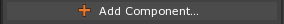

Game Objects
This lesson focuses on putting the editor to use in order to perform various tasks: creating objects, running the game, searching, and manipulating objects by scaling, rotating, translating, and using the Area component, and the effects of the ParentingTool.
Learning Objectives
Learn to...
- Create game objects.
- Name objects.
- Copy objects.
- Manipulate objects using various tools.
| Vocabulary | ||
|---|---|---|
| Game Object ( Cog ) | Parent | Child |
| Component | Sprite | Camera |
| Transform | Translation | Rotation |
| Scale | ||
Level Setup
Here is our new empty level:
The level is not actually empty because there is a Camera object (notice the in the Level window) as well as other objects that come with a level by default:
Create a Game Object
Select Menu

Notice that the Transform object can be found in the Objects Window:
- In the Objects Window
- Click on the Transform object
- If the Properties Window is not visible, then enter the Command:
Propertiesin the Search Window. (Remember you can open the Search Window from any where in the engine usingCtrl+Shift+Space.)
The properties of the Transform component attached to the object can be found in the Properties Window:
- In the Properties Window
- Click on the next to the Transform component
This displays the properties of the Transform component:

The Transform component provides the Translation (position), Rotation, and Scale of an object.
An object has been created at the center of the level, but we can’t see it yet. Let’s add a visual component to our game object.
Adding a Component
- In the Properties Window
- Click the  button
This brings up the Add Component drop down:
- Start typing: “Sprite”
The Sprite component should appear in the drop down selection:

- Click on Sprite to add a Sprite component
In the Properties Window, we can see that the Transform object now has a Sprite component:

You can also add components to a selected object by using the hotkey Ctrl+M.
The Sprite component provides a 2D visual representation of the Transform object. In the Level Window, we can see the Transform object’s Sprite:

The question mark is the visual representation of the Sprite object known as a SpriteSource. We won’t go into much detail about what exactly is a SpriteSource and how they work just yet. Instead, we just need to know that the square with the question mark inside is the DefaultSprite.
Changing the Name of an Object
In the Objects Window
- Select the Transform object by clicking on it
In the Properties Window
Set Name to: Square
Under Sprite
- Set SpriteSource to: Square

Making a Copy of an Object
- Select the Square object
- Duplicate it:
- Press
Ctrl+Cto copy it - Press
Ctrl+Vto paste a new copy
- Press
Notice how there are 2 Square objects in the Objects Window, but we only see one in the Level Editor.
- Select a Square object
- In the Properties Window
- Set Name to: BlueSquare
- Under Transform
- Set Translation to: [5, 0, 0]
- Under Sprite
- Click on the
 Color property
Color property
- Click on the
The following window should appear:

{kind=link}
The level should look like this:
{kind=link}
Running the Game
There are multiple ways to run the game in the editor.
- Press
F5key on the keyboard - Press the
 button
button - Command :
PlayGameor
Here is how the game should look:
Changing Visibility
We are able to choose whether or not a sprite is visible when the level starts by setting the Sprite component’s Visible property to True or False.
Many properties are simply flags that mark something as on or off, true or false. In the Zero Engine these types of properties are shown as checkboxes.
Those checked are True, those unchecked are False.

Notice SelectChildren is set to: False and SelectRoot is set to: True
In the Properties Window
- Under Sprite
- Set Visible to: False

- Under Sprite
The Square object is not visible, but keep in mind that it is indeed still there.
- Stop the Game
- Select the Square object
- In the Properties Window
- Under Sprite
- Set Visible to: True
- Under Sprite
Translate Tool
Another way to move objects around in the editor is by using the TranslateTool. This is a tool located in the Tools Window.
- In the Tool Bar
- Click the button
- Select the BlueSquare object
You should see colored arrows and a small white box:
These arrows lay on the X (red), Y (green) and Z (blue) axes of object.
- Click and drag along one of these colored arrows to move the object along one of the axes
- Click and drag the mouse from the white box in the center to translate on all axes at once
Notice that in the Properties Window, the Translation values are changing while you move the object.
Rotate Tool
The RotateTool is used to rotate objects.

- In the Tool Bar
- Click the
 button
button
- Click the
- Click on one of the circles (red, blue and green circles) and drag the mouse.
This rotates the object around its X (red), Y (green), or Z (blue) axes. In 2D, we usually just rotate around the Z-axis.
Scale Tool
The ScaleTool tool is used to scale objects.
- In the Tool Bar
- Click the
 button
button
- Click the
Colored lines with Boxes at the tips with a white box in the center will be drawn from the object.
- Click and drag along the colored axes
- Click and drag the mouse from the white box in the center to scale on all axes at once
This scales the object along its X (red), Y (green), or Z (blue) axes.
Notice that in the Properties Window, the Scale values are changing while you scale the object.
Manipulator Tool & Area Component
- Select the BlueSquare object
- In the Properties Window
- Under Sprite
- Set SpriteSource to:
SquareBordered
- Set SpriteSource to:
- Under Transform
- Set Scale to: [5,1,1]
- Under Sprite
- In the Properties Window
You may notice that the borders of the sprite are stretched.
To create crisp borders, we can add the Area Component and scale via the manipulator tool.
-
In the Properties Window
- Under Transform
- Set Scale to: [1,1,1]
- Add the Area component
- Under Transform
In the Tool Bar
- Click the button
You’ll see points in which you can grab to change the scale of the object:

You can see that scaling no longer affects the borders:

Now the edges are nice on our sprite. This is because the default SquareBordered sprite already has feature known as Nine-Slice Scaling enabled, here is how it works.

Nine-Slice scaling is enabled through the sprite source editor which you will see in a later lesson.
Now we know how to create, save, and run our game projects, create and copy game objects, edit a game object’s properties, change a Sprite’s visibility, and use the TranslateTool, RotateTool, ScaleTool, and ManipulatorTool.